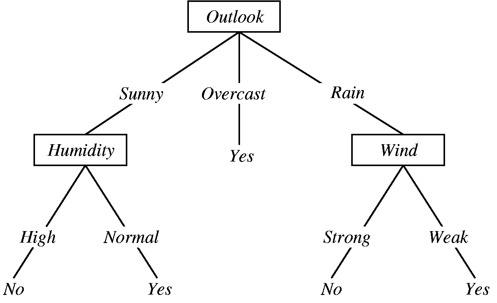

Decision Tree
DECISION TREE
Data Mining (DM) adalah salah satu bidang yang berkembang pesat karena besarnya kebutuhan akan nilai tambah dari database dengan skala besar. DM adalah serangkaian proses untuk menggali nilai tambah berupa pengetahuan yang selama ini tidak diketahui secara manual dari suatu kumpulan data. DM memiliki hubungan dari bidang ilmu seperti artificial intelligent, machine learning, statistik dan database. Beberapa teknik DM antara lain: clustering, classification, association rule mining, neural network genetic algorithm dan lain-lain.
Klasifikasi
Klasifikasi adalah proses untuk menemukan model atau fungsi yang menjelaskan atau membedakan konsep atau kelas data, dengan tujuan untuk dapat memperkirakan kelas dari suatu objek yang labelnya tidak diketahui. Model itu sendiri bisa berupa aturan “jika-maka”, berupa decision tree, formula matematis atau neural network. Proses classification biasanya dibagi menjadi dua fase: learning dan test. Pada fase learning, sebagian data yang telah diketahui kelas datanya diumpankan untuk membentuk model perkiraan. Kemudian pada fase test model yang sudah terbentuk diuji dengan sebagian data lainnya untuk mengetahui akurasi dari model tersebut. Bila akurasinya mencukupi model ini dapat dipakai untuk prediksi kelas data yang belum diketahui.
Decision tree sesuai digunakan untuk kasus-kasus yang keluarannya bernilai diskrit. Walaupun banyak variasi model decision tree dengan tingkat kemampuan dan
syarat yang berbeda, pada umumnya beberapa ciri yang cocok untuk diterapkannya decision tree adalah sebagai berikut :
-
Data dinyatakan dengan pasangan atribut dan nilainya
-
Label/keluaran data biasanya bernilai diskrit
-
Data mempunyai missing value
(nilai dari suatu atribut tidak diketahui) Dengan cara ini akan mudah mengelompokkan obyek ke dalam beberapa kelompok. Untuk membuat decision tree perlu memperhatikan hal-hal berikut ini :
-
Atribut mana yang akan dipilih untuk pemisahan obyek
-
Urutan atribut mana yang akan dipilih terlebih dahulu
-
Struktur tree
-
Kriteria pemberhentian
-
Pruning

Manfaat Decision Tree
Manfaat utama dari penggunaan pohon keputusan adalah kemampuannya untuk mem-break down proses pengambilan keputusan yang kompleks menjadi lebih simple. Dengan itu, pengambil keputusan akan lebih menyelesaikan solusi dari permasalahan.
Decision tree juga berguna untuk mengeksplorasi data, menemukan hubungan tersembunyi antara sejumlah calon variabel input dengan sebuah variabel target. Memadukan antara eksplorasi data dan pemodelan, sehingga sangat bagus sebagai langkah awal dalam proses pemodelan bahkan ketika dijadikan sebagai model akhir dari beberapa teknik lain.
# Run this program on yo ur local python
# interpreter, provided you have installed
# the required libraries.
# Importing the required packages
import numpy as np
import pandas as pd
from sklearn.metrics import confusion_matrix
from sklearn.model_selection import train_test_split
from sklearn.tree import DecisionTreeClassifier
from sklearn.metrics import accuracy_score
from sklearn.metrics import classification_report
# Function importing Dataset
def importdata():
balance_data = pd.read_csv("aps_failure_test_set.csv", sep=',' , header=None)
#'https://archive.ics.uci.edu/ml/machine-learning-'+
#'databases/balance-scale/balance-scale.data',
# sep= ',', header = None)
# Printing the dataswet shape
print ("Dataset Lenght: ", len(balance_data))
print ("Dataset Shape: ", balance_data.shape)
# Printing the dataset obseravtions
print ("Dataset: ",balance_data.head())
return balance_data
# Function to split the dataset
def splitdataset(balance_data):
# Seperating the target variable
X = balance_data.values[:, 1:5]
Y = balance_data.values[:, 0]
# Spliting the dataset into train and test
X_train, X_test, y_train, y_test = train_test_split(
X, Y, test_size = 0.3, random_state = 100)
return X, Y, X_train, X_test, y_train, y_test
# Function to perform training with giniIndex.
def train_using_gini(X_train, X_test, y_train):
# Creating the classifier object
clf_gini = DecisionTreeClassifier(criterion = "gini",
random_state = 100,max_depth=3, min_samples_leaf=5)
# Performing training
clf_gini.fit(X_train, y_train)
return clf_gini
# Function to perform training with entropy.
def tarin_using_entropy(X_train, X_test, y_train):
# Decision tree with entropy
clf_entropy = DecisionTreeClassifier(
criterion = "entropy", random_state = 100,
max_depth = 3, min_samples_leaf = 5)
# Performing training
clf_entropy.fit(X_train, y_train)
return clf_entropy
# Function to make predictions
def prediction(X_test, clf_object):
# Predicton on test with giniIndex
y_pred = clf_object.predict(X_test)
print("Predicted values:")
print(y_pred)
return y_pred
# Function to calculate accuracy
def cal_accuracy(y_test, y_pred):
print("Confusion Matrix: ",
confusion_matrix(y_test, y_pred))
print ("Accuracy : ",
accuracy_score(y_test,y_pred)*100)
print("Report : ",
classification_report(y_test, y_pred))
# Driver code
def main():
# Building Phase
data = importdata()
X, Y, X_train, X_test, y_train, y_test = splitdataset(data)
clf_gini = train_using_gini(X_train, X_test, y_train)
clf_entropy = tarin_using_entropy(X_train, X_test, y_train)
# Operational Phase
print("Results Using Gini Index:")
# Prediction using gini
y_pred_gini = prediction(X_test, clf_gini)
cal_accuracy(y_test, y_pred_gini)
print("Results Using Entropy:")
# Prediction using entropy
y_pred_entropy = prediction(X_test, clf_entropy)
cal_accuracy(y_test, y_pred_entropy)
# Calling main function
if __name__=="__main__":
main()
HASIL IMPLEMENTASI
Dataset Lenght: 491 Dataset Shape: (491, 5) dataset : 0 999000 1960 1000 999 0 0 2750000 2006 1418 1939 1 0 1350000 1900 2150 628 2 0 629000 1903 500 1258 3 0 439000 1930 500 878 4 0 439000 1930 500 878 Results Using Gini Index: Predicted values: [0 1 0 1 1 0 0 0 1 1 1 1 1 0 1 0 0 0 1 1 1 1 1 0 1 1 1 1 1 0 0 1 0 1 0 0 1 1 1 1 1 0 1 1 1 1 1 1 1 0 0 1 0 0 0 0 1 0 1 1 0 0 0 0 0 0 0 0 1 1 0 1 0 0 1 1 1 0 1 1 1 0 1 0 1 0 1 0 1 0 1 1 1 0 1 1 1 1 1 1 1 1 1 1 1 1 1 0 0 1 1 1 0 0 1 1 0 1 1 1 1 1 0 0 1 0 0 0 0 0 1 0 1 1 0 1 1 1 1 1 0 1 0 1 1 0 1 0] Confusion Matrix: [[51 21] [ 8 68]] Accuracy : 80.4054054054054 Report : precision recall f1-score support
0 0.86 0.71 0.78 72
1 0.76 0.89 0.82 76
micro avg 0.80 0.80 0.80 148 macro avg 0.81 0.80 0.80 148 weighted avg 0.81 0.80 0.80 148
Results Using Entropy: Predicted values: [0 1 1 1 0 1 0 0 1 1 1 1 1 1 1 0 1 1 1 1 1 1 1 1 1 1 1 1 1 0 0 1 0 1 1 0 1 1 1 1 1 0 1 0 0 0 1 1 1 0 0 1 1 0 0 1 1 0 1 1 0 1 0 1 0 1 1 1 1 1 1 1 0 0 1 1 1 0 1 1 1 0 1 1 1 1 1 0 1 0 1 1 1 1 1 1 1 1 1 1 1 1 1 1 0 1 1 0 1 1 1 1 1 0 1 1 0 1 1 1 1 1 1 0 1 1 0 1 1 0 1 0 0 1 0 1 1 1 1 1 0 1 0 1 1 0 1 0] Confusion Matrix: [[36 36] [ 5 71]] Accuracy : 72.2972972972973 Report : precision recall f1-score support
0 0.88 0.50 0.64 72
1 0.66 0.93 0.78 76
micro avg 0.72 0.72 0.72 148 macro avg 0.77 0.72 0.71 148 weighted avg 0.77 0.72 0.71 148
Process finished with exit code 0